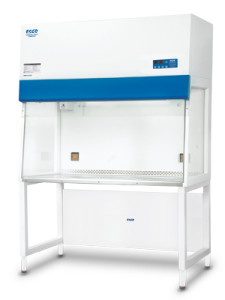

Airstream® Vertical Laminar Flow Clean BenchesVertical Laminar Flow Clean Benches offer proven protection for your samples and processes.
General
Esco Airstream Vertical Laminar Flow Clean Benches offer proven protection for your samples and processes where operator protection is not required. Vertical laminar flow offers certain tangible advantages over horizontal flow clean benches (which may be the convention in some parts of the world), such as lower energy consumption (40% of conventional systems) levels through the use of exclusive motorized impeller technology and less airflow turbulence (especially when large objects are used in the work zone). In fact, the negative pressure filter mounting system employed on these models is widely recognized to be superior to that of conventional horizontal flow clean benches.
Key Benefits:
- ISO Class 4 workzone
- Airflow monitoring
- Energy saving
Features
- ISO Class 4 air cleanliness within work zone as per ISO 14644.1 (Equivalent to Class 10 as per US Federal Standard 209E, 10 times “cleaner” than the usual Class 100 classification on clean benches offered by the competition).
- High-quality polyester pre-filter and main ULPA filter with a typical efficiency of 99.9997% at MPPS and 99.9998% at both 0.3 and 0.12 microns provide the best product protection in the world; typical main ULPA filter lifespan is more than 3 years depending on the usage of the clean bench.
- Mini-pleat separatorless ULPA filter technology reduces energy consumption and delivers increased laminar airflow uniformity for better product and cross contamination protection.
- Integral filter metal guard on both sides prevents accidental damage to ULPA filter; seamless filter gasket is permanently molded on the filter frame and will not deteriorate over time; aerosol (DOP/PAO) challenge test port included
Accessories
Esco offers a variety of options and accessories to meet local applications. Contact Esco or your local Sales Representative for ordering information.
Support Stands
- Fixed height, available 711 mm (28″) or 860 mm (34″)
- With leveling feet (SPL)
- With casters (SPC)
- Adjustable height, hydraulic range 711 mm (28″) to 860 mm (34″)
- Manual or electrical lift (SPM)
- With casters
Electrical Outlets and Utility Fixtures
- Electrical outlet, ground fault, North America
- Electrical outlet, Euro/ Worldwide
- Petcock (air, gas, vacuum)
- North America (American) style
- Euro/Worldwide style DIN 12898, DIN 12919, DIN 3537
Cabinet Accessories
- Germicidal UV lamp
- Transparent front cover (recommended when UV lamp is used)
- PVC armrest
- Height-adjustable lab chair
- Ergonomic foot rest
- IV bar, with hooks
| Model No. | External Dimensions (mm) |
Internal Dimensions (mm) |
Airflow Velocity (Inflow) |
Airflow Velocity (Downflow) |
Electrical |
| AVC-2D1 | 730 x 770 x 1250 | 660 x 700 x 720 | - | 0.45(m/s) / 90(fpm) |
220-240V,AC, 50Hz,1ø |
| AVC-2D2 | 110-120V,AC, 60Hz,1ø | ||||
| AVC-2D3 | 220-240V,AC, 60Hz,1ø | ||||
| AVC-3D1 | 1035 x 770 x 1250 | 965 x 700 x 720 | - | 0.45(m/s) / 90(fpm) |
220-240V,AC, 50Hz,1ø |
| AVC-3D2 | 110-120V,AC, 60Hz,1ø | ||||
| AVC-3D3 | 220-240V,AC, 60Hz,1ø | ||||
| AVC-4D1 | 1340 x 770 x 1250 | 1270 x 700 x 720 | - | 0.45(m/s) / 90(fpm) |
220-240V,AC, 50Hz,1ø |
| AVC-4D2 | 110-120V,AC, 60Hz,1ø | ||||
| AVC-4D3 | 220-240V,AC, 60Hz,1ø | ||||
| AVC-5D1 | 1645 x 770 x 1250 | 1575 x 700 x 720 | - | 0.45(m/s) / 90(fpm) |
220-240V,AC, 50Hz,1ø |
| AVC-5D2 | 110-120V,AC, 60Hz,1ø | ||||
| AVC-5D3 | 220-240V,AC, 60Hz,1ø | ||||
| AVC-6D1 | 1950 x 770 x 1250 | 1880 x 700 x 720 | - | 0.45(m/s) / 90(fpm) |
220-240V,AC, 50Hz,1ø |
| AVC-6D2 | 110-120V,AC, 60Hz,1ø | ||||
| AVC-6D3 | 220-240V,AC, 60Hz,1ø |